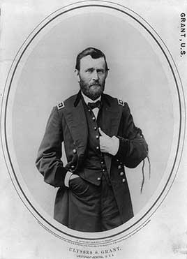

The general who won the Civil War. As president he enforced Reconstruction, created the Justice Department, and used it and federal troops to break up the Ku Klux Klan. He signed laws committing the country to pay its war debts in gold, vetoed a bill to print more paper money after the Panic of 1873, created Yellowstone, the first national park, and settled war claims with Britain. His administration was rocked by corruption scandals among the people around him.
Shaded areas show the years in office, with a few years before and after for comparison. Budget years ran July to June until 1976 (now October to September), so each year's figures cover parts of two calendar years.
June 30, 1868 (end of fiscal 1868): $2.61 billion → June 30, 1876 (end of fiscal 1876): $2.18 billion
Daily debt figures don't exist before 1993, so Grant's numbers use the fiscal years closest to his term, the same rule as every other page.
Debt as a share of GDP. Above 100% means the debt is bigger than a year of everything the country produces.
Money borrowed each budget year (below the line) or paid down (above). The White House budget office's yearly figures begin in 1901.
No national estimates before 1890. Economist Stanley Lebergott's yearly estimates, the earliest national series, begin in 1890
How much prices rose each year (consumer price index).
What everyday prices and paychecks did while in office.
Prices use the consumer price index (MeasuringWorth). The minimum wage is the federal rate set by Congress.
217 orders. Count from the American Presidency Project.
Yearly counts aren't reliable for this era. Orders were not numbered until 1907, when the State Department numbered the ones already in its files, and many orders were never numbered at all, so only the total is shown.
Source: American Presidency Project: executive orders (full list of every order).
Most orders in this era were routine, such as setting aside public land or exempting jobs from civil service rules.
Incomplete: orders before 1929 were not numbered or collected consistently. This archive has 112 of the roughly 217 orders counted for this president.
Source: Executive Orders Archive, compiled from the American Presidency Project and the Federal Register. Topics are the archive's automated tags; "Revoked" and similar labels come from the Federal Register's records.
A pardon wipes out the punishment for a federal crime; a commutation shortens a sentence but leaves the conviction. The Justice Department's published counts begin in 1900.
The Justice Department's published clemency counts begin in fiscal 1900, so there are no reliable yearly totals for this presidency.
Source: U.S. Dept. of Justice, clemency statistics, which lists every recipient with the crime and sentence.
The crime: Leading the Whiskey Ring, which stole millions in federal liquor taxes (convicted 1875)
Sentence: 18 months and a $5,000 fine
Why it drew attention: McDonald was the Grant-appointed tax supervisor in St. Louis at the center of the biggest scandal of Grant's presidency. Grant pardoned him five weeks before leaving office.
SourceThe same checklist for every president. Tap a row for details and sources.
No articles of impeachment were voted on.
Never charged with a crime. A Washington police officer stopped him in 1872 for racing his horse carriage, and he paid a $20 penalty.
More than 100 people were convicted in the Whiskey Ring, including Treasury tax official John McDonald. War Secretary William Belknap was impeached by the House. Grant's private secretary, Orville Babcock, was indicted and acquitted.
SourceGrant appointed John Henderson as special prosecutor for the Whiskey Ring in 1875, then fired him after Henderson criticized Grant in court over Babcock.
SourceNo official investigation found he used federal agencies against opponents. His Justice Department's use of force against the Klan was authorized by Congress.
What happened, what was proven, and how it ended.
Distillers and Treasury officials, mostly in St. Louis, conspired to skim millions of dollars in liquor taxes.
Outcome: More than 100 convictions. Grant's secretary was acquitted after Grant testified for him, and Grant pardoned the ring's leader.
SourceThe secretary of war and his wives received about $20,000 from a man who held a lucrative Army trading post.
Outcome: Impeached unanimously by the House; acquitted by the Senate.
SourceFinanciers Jay Gould and Jim Fisk tried to corner the gold market, using Grant's brother-in-law to get inside information. When Grant ordered the Treasury to sell gold, the price collapsed and many investors were ruined.
Outcome: A congressional investigation in 1870 cleared Grant of wrongdoing.
SourceA railroad construction company had given its stock to members of Congress, including Grant's vice president, Schuyler Colfax, while they oversaw its government funding.
Outcome: The House censured two congressmen; Colfax was dropped from the 1872 ticket.
SourceGrant owned one enslaved man, William Jones, whom he acquired from his father-in-law. His wife's family's enslaved servants also worked for the household before the war.
Outcome: Grant freed Jones in 1859 rather than sell him, though he was deeply in debt at the time.
SourceBefore his presidency, as a Union general, Grant ordered all Jews expelled from his military district.
Outcome: Lincoln revoked it within weeks. Grant later called it wrong, and as president appointed more Jewish officials than any predecessor.
SourceWidely quoted remarks, with the context they were said in.
Let us have peace.
Let no guilty man escape.
Failures have been errors of judgment, not of intent.